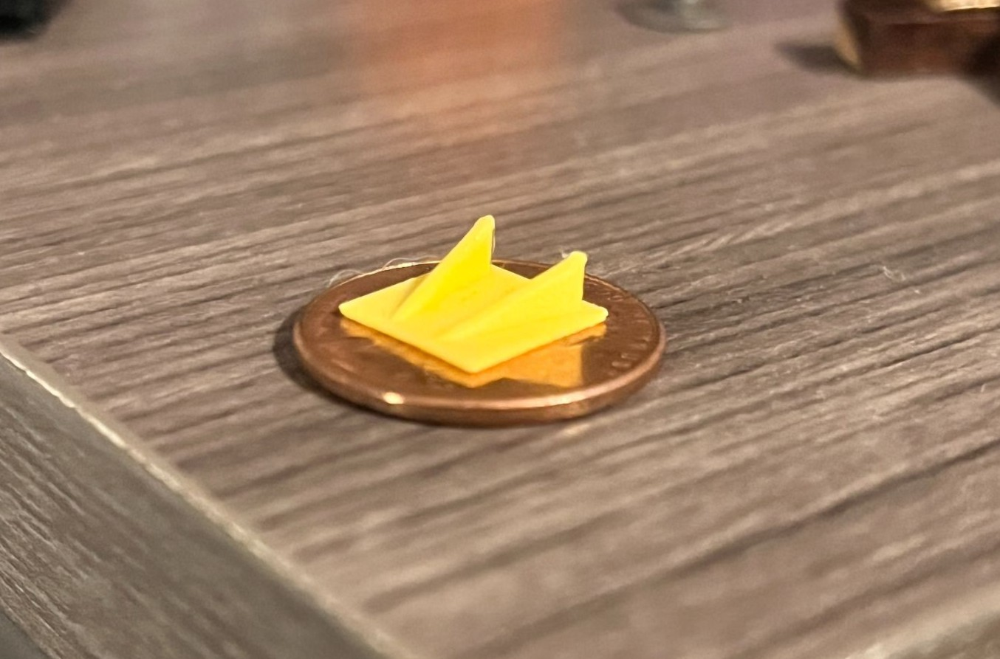
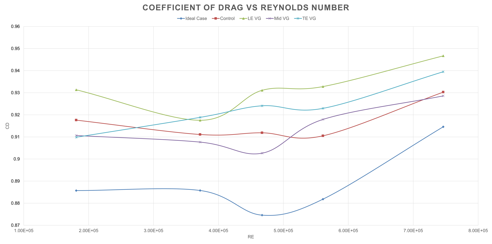

Overview
Investigated how vortex generator (VG) placement affects drag on a bluff-body vehicle. Wind tunnel testing and flow visualization were used to find the position that best delays boundary-layer separation.
Tools & Methods
- Open-circuit wind tunnel testing
- Flow visualization with smoke and surface tufts
- Drag force measurement with a pistol-grip sensor
- Drag coefficient (Cd) and power-loss analysis
- Dimensional analysis using Reynolds number scaling
Experimental Setup
Tested a 1:12 scale stock car model across Reynolds numbers from 1.6 × 10⁵ to 6.6 × 10⁵ in five configurations:
- No vortex generators (baseline)
- Front placement (~5% of body length)
- Mid placement (~50%)
- Rear placement (~80%)
- Optimized placement (~65%)



Key Engineering Insights
Flow Behavior
Vortex generators energize the boundary layer, delaying separation and shrinking the wake. Flow visualization showed that well-placed VGs kept the flow attached further along the body.
Placement Sensitivity
- Front placement: increased drag through early turbulence and higher skin friction
- Mid placement: minimal or inconsistent effect
- Rear-mid (~65%): most effective — delayed separation and reduced the wake
Results
Drag Reduction
The optimized placement reduced drag by roughly 3% relative to the baseline across the tested Reynolds numbers.

Power Impact
The drag reduction was measurable, but the corresponding power savings were minimal at this scale — a reminder that Reynolds-number mismatch limits how far model results extrapolate to a full-size vehicle.
Key Takeaways
- Small geometric changes can significantly affect boundary-layer behavior
- VG placement matters more than whether VGs are present at all
- Flow visualization is essential for interpreting aerodynamic results
- Scale testing has real limits; know what your Reynolds number does and doesn't tell you